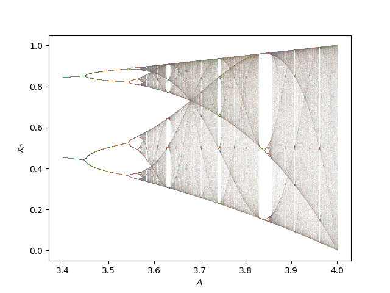

Can you teach programming in 15 minutes?
“You think you know when you learn, are more sure when you can write, even more when you can teach, but certain when you can program.”
— Alan Perlis
First recipient of the Turing Award
For 3 years now I have conducted a programming class to high-school level students as part of my school’s annual outreach program, teaching them basic Python to compute and plot the logistic map in a 2 hours class. With 6 classes per year for 3 years, that’s 36 hours of classes, surprisingly more than a year of teaching tutorial classes.
With the advent of vibecoding though, this is the first year that I have to begin with the quote above, in an attempt to motivate the students into learning how to program themselves. Though, I’m sure the cool visualizations and simulations that I showed did much of the heavylifting.
The students didn’t sign up for a programming class afterall. Instead, they signed up for a 3 days camp to experience what doing a Physics degree is like. In the 3 days, they participated in various lab activities, doing cool experiments with lasers or fabricating a solar cell etc.
And then they come to my class and have to endure sitting in front of a computer for 2 hours, all while getting thrown errors from Python. So we already lost half the battle here.
Of course, most have no programming experience, and the actual teaching of basic Python programming spans just around 15 minutes, where they follow along a haphazard explanation about arrays, for loops, plotting, or whatnot in a Jupyter notebook, but with as little computing jargon as possible.
Afterwards, we let go and let them apply what they learned in the 15 minutes to solve a few simple tasks. A couple of TAs and me will then walk around and guide them if they encounter any problems. “Hands-on” is the point of their 3 days camp afterall.
Here’s the breakdown of the 2 hours:
- Introduction and theory (15 minutes)
- Learning Python (15 minutes)
- Doing the tasks (1.5 hours)
The tasks
Their tasks are quite simple really.
After some introduction about the idea of population dynamics and chaos at the start of the class, we got them to derive the logistic map:
x_{n+1} = Ax_n(1-x_n), where 0 \leq x_n \leq 1 and 0 \leq A \leq 4.
x_n models a proportion of population at year n, and A is a parameter that might represent some environmental conditions. Depending on the values of A, the population can rise and fall, or exhibit complex behaviors.
First task
Their first task is to plot x_n against n for some specified values of A and an arbitrary x_0.
After much iteration, we decided that the simplest solution is to make use of Numpy’s arrays:
import numpy as np
import matplotlib.pyplot as plt
x = np.zeros(50)
x[0] = 0.2
A = 0.5
for n in range(49):
x[n+1] = A * x[n] * (1 - x[n])
plt.plot(x)The students actually worked on multiple questions with different values of A, and explanations were given in between to allow them to appreciate and understand what the plots are showing, e.g., fixed points, stability, period doubling, onset of chaos etc.
where we have taken A = 0.5 and x_0 = 0.2.
Other than the np.zeros(50) and the for loop, this translates directly to the equation, with x[0] being x_0, and x[n+1] = A * x[n] * (1 - x[n]) being x_{n+1} = Ax_n(1 - x_n).
We made sure to teach more than just what are needed in the solutions though, so that the students can try to come up with their own solutions.
Second task
The second task is more challenging; they are to plot a bifurcation diagram for a range of A.
Again, we tried our best to come up with what we think is the simplest solution of
for A in np.linspace(3.4, 4, 3000):
x = np.zeros(600)
x[0] = 0.2
for n in range(599):
x[n+1] = A * x[n] * (1 - x[n])
plt.plot([A] * 300, x[300:], ',')
plt.xlabel("$A$")
plt.ylabel("$x_n$")Quite simply, we repeat the first task but for different values of A, and plot multiple values of x_n for each A. The only caveat is that we only want to plot for large values of n so that the population has time to reach its long-time behavior for each A. This is the reason for the x[300:].
The result is quite spectacular. It captures the period-doubling route to chaos, intermittency route to chaos, islands of stability, the fractal nature of the map etc., demonstrating that such a simple equation can lead to complex and chaotic behaviors. Imagine how the actual and much more complex evolution of real-world populations would look like!

What students struggle with
This is like 16 lines of Python code (4 are the same for both tasks), and Python is widely touted as one of the easiest to learn programming language.
So this shouldn’t be too difficult right?
Here are some difficulties that the students struggled with that I noticed:
Not understanding or forgetting about indentation. Python’s supposed simplicity of replacing braces with indentations seems to backfire here.
Missing colons for the
forloop. The colon is quite elusive and easy to forget.Confusing
[]and(). Though this will never convince me that MATLAB’s choice of using()for both function calls and array indexing is sane.The need to initialize arrays is quite arcane. Can you teach data structures on top of basic Python programming in 15 minutes?
Relating to the previous point, zero-based indexing. “Why is the last index not x_{50} when I did
np.zeros(50)?”Struggling to wrap their heads around the imperative
forloops and nestedforloops.Relating to the previous point, not even knowing how to start iterating
x[n]imperatively. Even without theforloop.
There are of course other minor things like doing Ax[n](1 - x[n]) instead of A * x[n] * (1 - x[n]), secretly copy-pasting from ChatGPT, not reading error messages, or getting bamboozled by Jupyter’s hidden states.
But ultimately, in my opinion, it mostly comes down to 2 things:
- Syntax or little quirks of the language (Points 1 to 5).
- Wrapping their heads around the imperative way of looping through each index and iterating each x_n one by one (Points 6 and 7).
I know I’m overstating this, as no one will actually be learning programming in 15 minutes. The goal is for the students to have fun interacting with Python along with cool visualizations that relates to physics, not to actually learn programming. Hence the 15 minutes “lesson” and 1.5 hours “hands-on”.
But humor me for a second, and consider what if it’s actually possible to learn something related to programming in 15 minutes?
So what should the students actually be learning?
Here’s my thesis:
Students should learn
- the idea behind programming, not the programming,
- to compose small behaviors into large solutions.
You might be scratching your head here as this is quite vague, but these 2 points are really in the spirit of Edsger Dijkstra’s well-known quote of
“Computer science is no more about computers than astronomy is about telescopes.”
The idea behind programming
For the first point, students shouldn’t be spending their time overcoming and “learning” the syntax and little quirks about the language.
If they are, and if they leave the class feeling like they learned something because Python eventually stopped throwing error messages at them, then we have really failed them in their education.
I might be being overly dramatic, but I think the point I’m making here is related to a crisis in modern education, where this is just one example.
In school, what we teach falls broadly into two categories: skills and disciplines.
Skills are useful and immediately applicable knowledge, but expires quickly. Teaching Python, Microsoft Office, or more recently, using LLMs, are some examples.
Disciplines, by contrast, are foundational knowledge that makes us better than those who came before us. They are not as immediately applicable, but dates very slowly; this is long-term knowledge and human wisdom. Subjects like Mathematics, Physics, History, and of course Computer Science etc. are some examples.
In his TEDx talk, Simon Peyton Jones observes that in his field of computer science, people have lost sight of the foundational discipline, and that there is too much focus on technology rather than ideas.
Perhaps this warrants a separate post, but not only do I think that Simon’s observations hold true for our entire learning culture, I think we are moving more and more towards this direction. We judge whether something is worth learning based on its “usefulness” in the current job market, and the result is a population that is highly educated on paper but not “in vivo” so to speak.
In the linked TEDx talk in the aside, Simon gave a video example of how some school children performed a sorting algorithm just by following some rules themselves, without any computers, bringing to life Dijkstra’s quote above, where “this clearly is about computation and not about technology”.
I wish we could demonstrate this for our class, but alas the students ended up debugging Python codes most of the time, and “learned” Python instead of something deeper.
So how can we do better?
I don’t really know, maybe we can go back to pre-2000s and teach Lisp as it is typically praised for having lesser syntax and grammars than other languages1?
1 Many universities, and most famously MIT until 2008, used to teach Lisp (or its dialects) for their computer science courses before Python and Java took over.
2 Working through SICM really is an example of Alan Perlis’s quote above.
Lisp still has some interests in the field of Physics, e.g., Rigetti’s Quilc, Sam Ritchie’s Emmy, and of course the popular SICM2. Uncle Bob also thinks that Lisp will outlasts all other languages and eventually becomes the standard language that all programmers use.
Learning small behaviors and composing them to solve big problems
To convince you of the second point, take a look at how you can do the first task in Haskell
Yes, this post turns out to be another thinly-veiled propaganda for functional programming.
logisticMap a xn = a * xn * (1 - xn)
xs = take 50 (iterate (logisticMap 0.5) 0.2)
main = plotList [] xsx = np.zeros(50)
x[0] = 0.2
A = 0.5
for n in range(49):
x[n+1] = A * x[n] * (1 - x[n])
plt.plot(x)and the second task
task1 a = drop 300 (take 600 (iterate (logisticMap a) 0.2))
aValues = toList (linspace 3000 (3.4, 4.0))
xs = map task1 aValuestask1 a = drop 300 (take 600 (iterate (logisticMap a) 0.2))
aValues = toList (linspace 3000 (3.4, 4.0))
points = [(a, xs) | a <- aValues, xs <- task1 a]
main = plotPath [PlotStyle Points] pointsfor A in np.linspace(3.4, 4, 3000):
x = np.zeros(600)
x[0] = 0.2
for n in range(599):
x[n+1] = A * x[n] * (1 - x[n])
plt.plot([A] * 300, x[300:], ',')I cheated a little here as I removed the type declarations and library imports for both Haskell solutions. Though, they are more related to the first point about quirks of the language than the second point that I’m trying to make here.
I’ve also separated the solution for plotting as again it involves quirks about the language, particularly list comprehension. Though, it simply corresponds to the mathematical form of \{(A, x_n) | A \in [3.4, 4], x_n \in \textrm{task1}(A)\}.
Of course, if one is unfamiliar with functional programming, one would be confused on what are map, iterate, take, and drop.
But turns out, these 4 functions appear in almost all functional programming languages3. This way, learning programming stops being about learning syntax and becomes about learning vocabularies.
3 Type of one them into Hoogle Translate and “translate” it to other languages.
We can teach the simple behaviors of these 4 functions (and more!) to the students in 15 minutes, and they will try to figure out how to put them together to solve complex problem.
Again, remember Dijkstra’s quote, or the school children performing a sorting algorithm without any computers; how to compose these functions together is independent of the programming language, and so we can simply use words to describe them, e.g.,
- We
iteratethe logistic map function with some A (ad infinitum), on an initial value of 0.2. - We then
takejust the first 600 values, anddropthe first 300 of these 600 values to get values from years 301 to 600. - We then
mapsteps 1 and 2 to a range of values of A \in [3.4, 4].
This is not very different from composing universal logic gates such as NAND, NOT, XOR, etc. to build complicated machines, a feat that kids and teens are capable of as evident in games like Minecraft with its redstone circuits.
Compare this with Python’s imperative ways of doing things:
- We initialize an array
xwith 600 values. - We set the first index of the array
x[0]to be 0.2. - We loop through each index
x[n]from 0 to 598, and compute the value for the next indexx[n+1]for some A. - We keep only the last 300 values of
xwithx[300:]. - We then put steps 1 to 4 in a loop that loops over A \in [3.4, 4].
In my opinion, in the imperative case, we are forcing our thinking and ideas to be compatible with the design of the language. For example, this solution only works because Numpy is an array programming language, and we have to work around quirks of its designs, e.g., the range of index to loop over is somewhat unintuitively 0 to 598. For languages that don’t have array data structures, or have different quirks about how arrays are used, our solution would change.
In contrast, in the functional case, it’s simply function applications, i.e., map(drop(take(iterate(...)))), or in pipe notation, iterate(logisticMap, 0.2) |> take(600) |> drop(300) |> map(aValues)4.
4 I’m simplifying here, but the point still stands.
For example, if one is familiar with functional programming vocabularies, one can do the same for different languages:
using IterTools
logistic_map(A) = xn -> A * xn * (1 - xn)
task1(A) =
0.2 |>
iterated(logistic_map(A)) |>
(x -> take(x, 600)) |>
(x -> drop(x, 300)) |>
collect
xs = map(task1, range(3.4, 4, length=3000))library(purrr)
logistic_map <- function(A) {
function(x) A * x * (1 - x)
}
task1 <- function(A) {
accumulate(
seq_len(599),
.init = 0.2,
.f = function(x, unused) logistic_map(A)(x)
) |>
tail(300)
}
xs <- map(
seq(3.4, 4.0, length.out = 3000),
task1
)fn task1(a: f64) -> Vec<f64> {
std::iter::successors(Some(0.2), move |&x| {
Some(a * x * (1.0 - x))
})
.skip(300)
.take(300)
.collect()
}
fn main() {
let xs: Vec<Vec<f64>> = linspace(3.4, 4.0, 3000)
.into_iter()
.map(task1)
.collect();
}def logisticMap(a: Double)(x: Double): Double =
a * x * (1.0 - x)
def task1(a: Double): Vector[Double] =
Iterator
.iterate(0.2)(logisticMap(a))
.drop(300)
.take(300)
.toVector
val xs: Vector[Vector[Double]] =
linspace(3.4, 4.0, 3000).map(task1)Note that in the case of R, we use a different vocabulary, accumulate, instead, which is also known as scan in functional programming.
Also note that in the case of Rust and Scala, there is actually no linspace function, so you’ll have to roll your own or use a third-party package.
While different languages use different names for the same vocabularies, e.g., iterated, tail, skip, successors etc., in my opinion, such a functional way of doing things makes it easier to reason about the code, and much more difficult to make a logical error.
Does it actually matter?
Perhaps not, as the goal is for the students to have some fun playing around with programming. In fact, a number of students have told us that they enjoyed the class and felt a sense of accomplishment when Python finally plots the pretty plots after they navigated all the errors.
Furthermore, the entire industry is stuck on imperative programming anyway, and Python programming is widely used in Physics careers. So it is no surprise that we are forced to teach Python (and in Jupyter notebooks) as part of the University’s policy.
Still, it doesn’t hurt to dream a little of what might be possible in teaching programming in a manner that is deeper, more transferable, and engages the students’ thinking more than just learning the programming language or technology, especially considering the rise of AI agents that can program an entire 3D game in a prompt.
Finally, I’ll end with this quote
“When the limestone of imperative programming has worn away, the granite of functional programming will be revealed underneath.”
— Simon Peyton Jones
Until then, I suppose we’ll keep feeding this vicious cycle of teaching students imperative Python and Jupyter notebooks, even when they outsource it all to ChatGPT anyway.